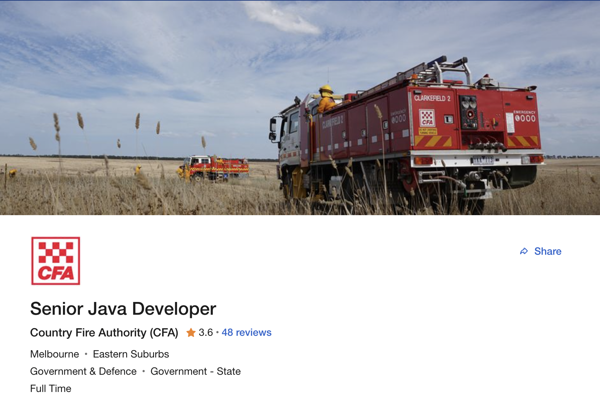

Mitchell Taylor
Assignment 1
- S3915730
- s3915730@student.rmit.edu.au
- My Github Profile
I was born in Australia and have lived here all my life, I previously studied a Bachelor of Paramedicine but decided I wanted to switch to information technology. I love music (techno, deep house, trance), enjoy playing video games, watching movies and television, and going to the gym.
I’ve always enjoyed computer games and assembling PCs , but I never ventured into understanding how they run or are made.
A couple of my friends that have been working in the IT field recommended that I study IT as I had found that I no longer wanted to study in the health care field.
I chose to study at RMIT mostly due to the multiple specialisations offered. This gave me the impression that I will have time and options to find out what field I would be interested in specialising in. The mid year intake also helped with the decision.
IT encompases such a wide sector, which is why I chose to study it as I have a broad interest in IT. My aim in undertaking this course is to discover a particular field that will appeal to me, and then planning to work in that field.

This position involves being working directly with designing and developing web applications using java technologies, development of frameworks, and team management.
A senior developer position currently appeals to me as I enjoy problem solving, keeping my mind active by having problems and issues to solve daily is desirable. Being directly involved in the design and development process is important to me as I would like to be working on projects, in addition to being in a position to provide advice to others.
Learning opportunities and career advancement are also available, such as moving to a project management role or team leader roles. The pay rate is usually pretty reasonable for the work done, with work life balance presumably being reasonable as its a government funded organisation.
Currently I have very little of the skills, qualifications, and experience required for this position. Nevertheless I am on pathway that will potentially end with be obtaining these skills.
Finishing my Bachelor of Information Technology is the first major step required for the position, as I will be able to learn about database management, various coding languages, development cycles, among other essential workplace skills. Upon finishing the degree, searching for an entry level programming position would be helpful in gaining the relevant experience required. Focusing on programming skills as well as looking for leadership opportunities would be beneficial.
"Logistician (ISTJ) is someone with the Introverted, Observant, Thinking, and Judging personality traits. These people tend to be reserved yet willful, with a rational outlook on life. They compose their actions carefully and carry them out with methodical purpose" (16Personalities, n.d, para 1)


I thought the results were interesting, as with all personality tests, some parts were accurate and others not so accurate. I don’t think it really matters in the workplace, as learning good communication skills and adaptability are key to being successful in the workplace, regardless of your personality type. Nevertheless it can be a useful tool in identifying potential weakness that people can improve upon. My identified weakness are ‘always by the book’ and ‘judgmental’ which can sometimes be true.
Being aware of potential weaknesses of mine, I can try to work with people will challenge my weaknesses, so I can learn and improve upon them.
This project will be focusing on creating a comparison website for fitness supplements. The website will be a useful tool in comparing similar products on the market. This will be done by collecting information of various fitness supplement products gathered from major vendors, providing product comparisons all in one place. The products in scope will be presented in two distinct categories: protein powder and pre-workout. For each category selected, a number of similar products would be shown with back to back comparison on the same page to make it easy for the end user to see the products of the same category across different vendors.
As with any product, customers want to get the best value for money when shopping online. This could not be more relevant for products in the category of fitness. If a customer is after a particular supplement, they might spend hours looking for the best deal. One would have to check multiple websites to not only find the cheapest price, but also see whether the shipping is free or if any discount coupons or bundles apply or/and if there are any other hidden fees. This website would remove the tediousness of having to manually search. The predicted growth in the fitness industry post covid is a clear indicator that this tool would be actively used (IbisWorld, 2021).
Products will be grouped in two categories:
The following filters will be implemented to allow the end user to be as specific or broad as possible:
Popular supplement vendors will be available as well as smaller vendors, providing increased opportunity for discounts and savings. Less known vendors will also benefit from the website through increased exposure and web traffic.
Alternative products will be presented at the bottom of a products page. What makes certain products an ‘alternative’ can be based on if they have the similar protein content, flavours, or tags.
Products will have tags assigned to them to improve search functionality. Tags will include brand, name, flavour, type (vegetarian, whey, casein, ect.)
The website will include ratings and reviews gathered from users across multiple vendors websites with permission.
In order to build a price comparison website, several tools and skills are needed. For designing the website, a text editor such as ‘Atom’ is needed to write the necessary code. ‘Github’ can be used to back up the written code, as well as hosting the webpage while in development. An API is an ideal way to revive data from vendors to display on the website, this involves obtaining data directly from the vendors which will be automatically entered into our websites database.
A potential drawback of this feature is that it requires the vendors to be willing to share their data. Web Scraping is an alternative to API, which uses bots to extract selected data from websites. This is not as desirable as a API since vendors may not approve of their data being taken without consent, which could lead to possible legal problems.
The skills required to create the webpage include knowledge of html5, CSS, and javascript. Python is also needed for further backend development Mysql can be used as the websites database.
Drawbacks, a lot of data to sort, vendors agreeing, updating prices, constant monitoring.